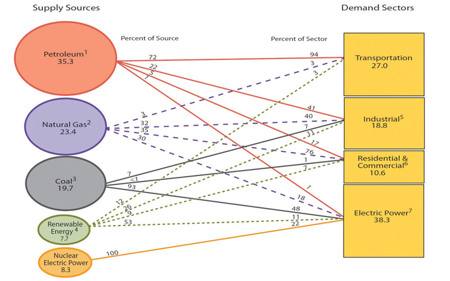
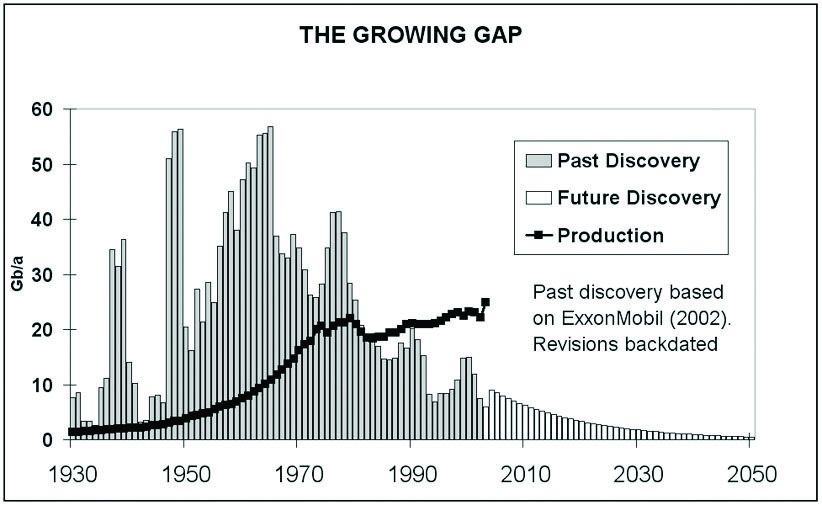

Energy use is one of the fundamental connections between business and sustainability. All businesses require energy to convert inputs into outputs, whether it is a product- or service-based business. This section focuses on modern day use of energy and in particular on oil as one of the most prominent energy sources and a nonrenewable resource.
The United States accounts for 25 percent of world energy use, and its economy is a major driver of economic activity (and therefore energy use) throughout the world. In 2009, ninety-five billion MMBTU of energy was consumed in the United States. The main source of energy was from petroleum (oil), accounting for 37 percent of all energy consumed. Natural gas accounted for 25 percent, coal 21 percent, nuclear 9 percent, and renewable energy 8 percent. The United States was a net importer of energy in 2009, it imported 24 percent of the energy used, with about 85 percent of imports being petroleum based.“Annual Energy Review,” US Energy Information Administration, http://www.eia.doe.gov/aer.
The four main demand sectors in the US economy are transportation, industrial, residential and commercial, and electric power generation. In 2009, the largest energy demand sector was electric power generation, consuming 41 percent of the energy supply; the next largest was transportation at 28 percent, then industrial at 20 percent, and finally residential and commercial at 11 percent.
Figure 2.8 Flow of Energy in the United States, 2009Figure 1.0 Energy Flow, Annual Energy Review 2009, ftp://ftp.eia.doe.gov/multifuel/038409.pdf.
Source: Energy Information Administration.
US annual energy consumption peaked at 101.5 billion MMBTU in 2007, with the subsequent decline being primarily attributable to the 2008–9 recession in the United States. While currently below its peak, energy use has remained at high levels in the United States, 12 percent higher than usage in 1990.
In the early history of the United States, wood was the primary thermal energy source. In the late 1800s, coal overtook wood in terms of energy consumption. In the mid-1900s both natural gas and petroleum overtook coal in terms of overall energy consumption.
Figure 2.9

Source: US Energy Information Administration.
The current energy usage in the United States is heavily dependent on fossil fuels. Fossil fuels are fuels formed from the decomposition of dead organic material over periods of millions of years. Coal, oil, and natural gas are all forms of fossil fuels. In 2009, over 80 percent of US energy came from fossil fuels. The benefits of fossil fuels are that they are a relatively inexpensive source of energy, have historically been available in large supplies, and have a very high energy density (making them economical to use for a variety of sectors of the economy).
However, fossil fuels have drawbacks as well. They are considered nonrenewable, meaning that they can’t replenish themselves—at least on a human time scale. Also in their extraction from the ground, transportation, and use, they can damage the ecosystem. These two drawbacks are the main factors that raise sustainability concerns for fossil fuels.
The United States’ current high use of imported energy sources puts the nation at risk for politically motivated restrictions to foreign energy supplies. The risks include threats from repressive regimes in oil-producing Arab and other nations to restrict supply if certain political and economic conditions are not met. Without imported energy, the US economy would suffer. More efficient use of energy and increased production and use of domestically produced renewable and other sources of energy can help to reduce national security risks in the United States.

Source: US Energy Information Administration, US Primary Energy Consumption Estimates by Source, 1775–2010, Annual Energy Review.
The fact that fossil fuels are nonrenewable means that at some point they will run out. Oil production in the United States peaked in 1970. While it is still uncertain as to when world oil production will peak, many sources are indicating a peak in the very near term.“The Peak Oil Crisis: Protests, Tsunamis & Deficits,” Falls Church News Press, March 16, 2011, http://www.fcnp.com/commentary/national/8762-the-peak-oil-crisis-protests-tsunamis-a-deficits.html. Petrobras CEO José Sergio Gabrielli stated that new capacity from new projects is insufficient to head off the decline in production and that to maintain existing production the world needs new oil volumes equivalent to Saudi Arabia’s contribution every two years; Saudia Arabia has the world’s largest oil-proved reserves at 262.6 billion barrels.“The World Factbook,” U.S. Central Intelligence Agency, https://www.cia.gov/library/publications/the-world-factbook/geos/sa.html.Sadad al-Husseini, former Saudia Arabian oil company Aramco executive, and multinational energy company Total’s CEO, Christophe de Margerie, both don’t see global oil production ever exceeding 89 million barrels per day (mbd). World oil production in the first quarter was 90.6 mbd, up 13 percent from the previous quarter.“Home Page,” International Energy Agency, http://omrpublic.iea.org. Other sources believe that oil production hasn’t peaked yet, but it is close to peaking. Researchers from Kuwait University and from Kuwait Oil Company predicted recently that world oil production will peak in 2014.“Home Page,” Hybrid Car Blog, http://www.hybridcarblog.com/labels/peak%20oil.html.
Figure 2.10 World Crude Output (Million Barrels per Day)http://omrpublic.iea.org/World/Wb_all.pdf.

Source: International Energy Agency, World Oil Supply 2010–2012.
While world oil production has not peaked as of yet, what has peaked are discoveries of new oil reserves. The peak of world oilfield discoveries occurred in 1965 at around fifty-five billion barrels per year (Gb/yr). The rate of discovery has been falling steadily since. Less than ten Gb/yr of oil were discovered each year between 2002 and 2007. The annual rate of discovery of new fields has remained remarkably constant at fifteen to twenty Gb/yr.“Oil Exploration Costs Rocket as Risks Rise,” Reuters, http://www.reuters.com/article/idUSTRE61A28X20100211.
Figure 2.11 The Growing Gaphttp://en.wikipedia.org/wiki/File:GrowingGap.jpg.
Source: The Oil Drum, http://www.theoildrum.com/uploads/3246/GrowingGap.jpg.
All the relatively easy to find and use oil and gas in the world has pretty much been found. Now comes the hard work in finding and producing oil from more challenging environments and work areas.
William J. Cummings, Exxon-Mobil company spokesman, December 2005
The actual date of the peak is not highly relevant; most relevant is that there is considerable evidence that world oil production will peak in the relatively near future. Given the high dependence of the US and world economy on oil, peak oil will put significant upward pressure on oil prices with the associated volatility as world demand for oil is expected to rise in the future and supplies begin to decline. The impact of reduced oil will demand some response from business to continue to survive and compete.
This section gives a brief discussion of the green economy and is meant to provide a little more detail on this aspect of sustainable business. The green economy can be thought of as private market efforts to address concerns about sustainability. Here the focus is on industries, while the focus of much of the book is at the individual business level. There is no single or standard definition of a “green job” or “the green economy,” but it relates to industries involved in activities that address in some way concerns about sustainability.
The green economy includes a broad number of industry and employment occupational categories. One classification of the green economy divides them into five different major categories of industries: energy efficiency, renewable energy, green transportation, environmental services, and clean or smart technology.
Energy efficiency industries, such as building contractors, insulation installers, and material providers, apply measures or practices to help use energy more efficiently. Environmental service industries, such as waste water treatment facilities, provide services directly or indirectly linked to the sustainability and improvement of the environment. Green transportation industries, such as mass transit operators, provide or produce relatively energy efficient transportation. Renewable energy industries, such as solar panels and wind turbine facilities, produce energy from resources that can be renewed. Clean or smart technology industries provide research, production, or services that directly or indirectly relate to the improvement of technology in the four other green industry categories. They include architectural design and services and energy efficiency control systems design and manufacturing.
Using this definition, in 2007, there were over 3.6 million green jobs in the United States, representing 3.2 percent of total private sector employment. Not only do green jobs represent a significant portion of the US economy, but green jobs also tend to pay well. The average annual wages earned in green employment nationally was $57,000, 40 percent above the national average earnings of $40,400. In the United States, the highest average annual wage green industries were in renewable energy and smart technology ($86,800 and $68,800, respectively) and the lowest average annual pay was in green transportation ($41,600).
Energy efficiency and smart technology were the two leading green industries in the United States, with each accounting for 1.1 million jobs and about 33 percent of overall green industry employment. The third most significant sector was environmental services, accounting for 900,000 jobs and 25 percent of overall green industry employment. Following that was green transportation, accounting for 300,000 jobs and 10 percent of overall green industry employment. The least significant green industry in terms of employment was renewable energy. This industry accounted for 100,000 jobs and about 3 percent of green industry employment.
Two areas of smart technology that deserve specific discussion are biotechnology and “green” chemistry. BiotechnologyThe application of biological techniques and living organisms to manufacture products, such as medicine., also known as “biotech,” involves engineering biological systems to develop commercial products. This includes medicines, agricultural products, biofuels, and packaging (such as biodegradable cups). Green chemistryChemistry that seeks to replace toxic and hazardous substances with less environmentally harmful alternatives. is the design of chemical products or processes that reduce or eliminate the generation of hazardous substances. Many products include toxic substances that are damaging to human health. Computers and other electronic devices contain lead, polychlorinated biphenyls (PCBs), cadmium, and mercury—all of which can cause injury to humans upon exposure. Biotechnology is related to green chemistry as biological processes may provide less environmentally damaging alternatives to conventional chemicals. For example, biodiesel, fuel made from vegetable oils, is nontoxic, while diesel fuel obtained from conventional crude oil is toxic.
This chapter has reviewed a variety of issues related to what we call the science of sustainability. There is little question that humans are putting significant demand on Earth’s resources, with negative impacts; however, there remains a certain amount of uncertainty of the long-term consequences. The market system and sustainable businesses can help address environmental challenges, but collective and governmental actions outside the market are also necessary given the scope and scale of challenges and the limitations of the market system.
EnerTrac, Inc., is a company based out of Hudson, New Hampshire, that was formed in 2006. The company manufactures a transmitter that can measure the fuel levels of heating oil or propane tanks and, using wireless technology, can send a signal to fuel dealers to let them know the amount of fuel in each customer’s tank. Traditionally, fuel dealers have had to estimate when to deliver fuel to customers, and this has resulted in unnecessary trips. Now fuel dealers can use their delivery computer systems to know exactly when to deliver fuel to customers. EnerTrac estimates that it can save fuel dealers $52 per year per customer by avoiding unnecessary deliveries. They can also reduce their truck fleet size because they are able to use a fewer number of trucks more efficiently.
EnerTrac is not only saving their customers (fuel dealers) money, but they are also helping them to reduce their GHG emissions. This is because for every unnecessary delivery trip avoided, there is less fuel the company has to use to service their customers. Fuel dealers can be more efficient in their fuel deliveries, reducing the fuel they use to provide service, which results in less carbon dioxide emissions from their delivery trucks. EnerTrac estimates that a fuel delivery company can reduce the carbon dioxide emissions from their trucks up to 40 percent by using their sensor technology.
Watch a video of Pat Mansfield, vice president of business development, explaining how the EnerTrac monitoring system works on YouTube here: http://www.enertrac.com/support/videos/heatingoil.shtml.